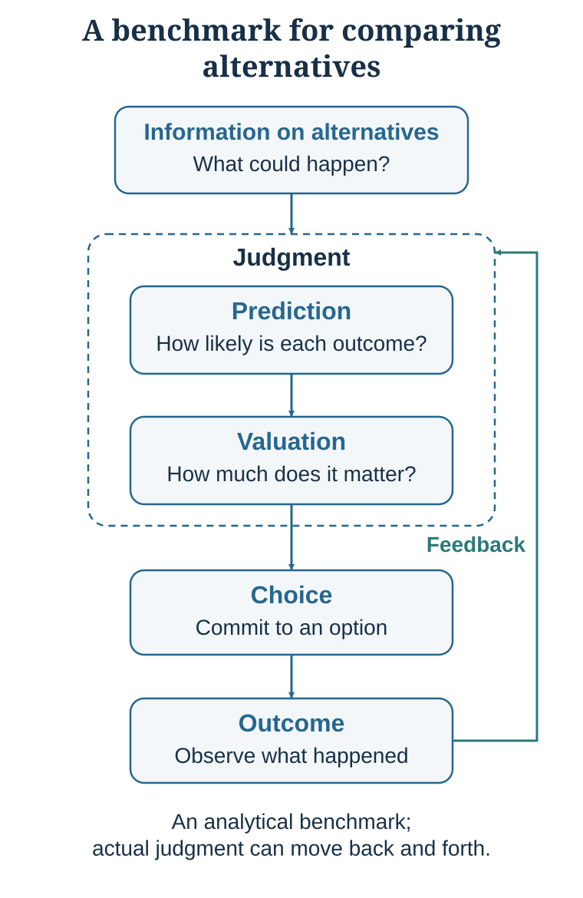

1 The Choice Is the Tip of the Iceberg
Decision-making begins before the moment of choice
Learning goals
- Map a decision as a loop rather than a single moment.
- Separate prediction from valuation.
- Distinguish decision quality from outcome quality.
- Apply the decision loop to persuasion and negotiation.
Imagine that you are choosing between two job offers. The first comes from a prestigious consulting firm. The salary is high, the brand name is powerful, and the career path is clear. Your classmates congratulate you. Your family thinks it is the obvious choice.
The second offer comes from a smaller sustainability start-up. The salary is lower, the company is less secure, and the future is uncertain. But the work feels meaningful. You would have more autonomy, more responsibility, and perhaps more opportunity to learn quickly.
Which job should you choose?
At first, the decision looks like a comparison between salary and meaning, prestige and autonomy, security and uncertainty. But the more carefully you look, the more complicated it becomes. What will you actually learn in each role? How stable is each organization? How much risk can you tolerate? How important is income at this stage of life? What will each job make possible five years from now? Which values are yours, and which are borrowed from family, peers, or status signals? What are you giving up by choosing one path rather than another?
Now change the setting. A marketing director must hire a product manager. A venture investor can fund only two of several start-ups. A university must decide whether to launch a new executive program. A negotiator must accept, reject, or redesign a proposed deal. These cases differ in content, but they share a structure: alternatives, incomplete information, uncertain consequences, values, constraints, trade-offs, action, and feedback.
That shared structure is why decision-making needs a science. A scientific approach gives us concepts for naming the parts of a decision, models for clarifying what coherent choice would require, evidence about how real people actually judge and choose, and tools for improving decisions in personal, organizational, social, and strategic life.
The decision loop

A useful organizing model is the decision loop. Alternatives and information enter judgment. Judgment includes at least two distinguishable tasks: prediction and valuation. Prediction concerns what is true or likely; valuation concerns how desirable, costly, fair, meaningful, or unacceptable possible outcomes would be. Judgment supports choice. Choice produces an outcome. Outcomes provide feedback that may update later beliefs, values, habits, and option sets.
The loop is deliberately simple. It is not a claim that the mind always processes information in a fixed order, or that every stage is conscious. Prediction and valuation often interact. Feedback may arrive before the outcome is complete. People can revisit alternatives after learning something new. The value of the model is functional: it tells us which questions a decision requires and where errors can enter.
Options are made, not merely received
We rarely choose in a vacuum. We choose among options, but the options we notice are not necessarily the only feasible options. A student choosing between two jobs may be able to negotiate, ask for more time, continue searching, accept one role temporarily, or create a hybrid arrangement. A company choosing between suppliers may split the contract, redesign the product, delay production, or build internal capacity. A government considering two policies may pilot one, combine elements, or redefine the problem.
Decision quality therefore depends partly on option quality. Careful evaluation cannot rescue a choice set that excludes the best alternative. Chapter 3 develops this point through feasible sets and opportunity cost.
Facts and values answer different questions
Prediction asks what is likely to happen. Valuation asks how good or bad an outcome would be. A university considering an executive program may predict enrollment, willingness to pay, competitor response, and faculty workload. It must separately value revenue, mission fit, learning, reputation, staff burden, and risk.
The distinction is simple but powerful. A person who wants a project to succeed may overestimate its probability. A person who fears relocation may persuade themselves that a distant job has poor prospects. A group may appear to disagree about “risk” when one person means a high probability of failure and another means that even a low probability would be unacceptable. Good discussion identifies whether disagreement concerns facts, forecasts, values, constraints, or trade-offs.
The loop is functional, not always conscious
The decision loop should not be mistaken for a conscious checklist that people execute before every action. Much ordinary behavior is fast, cue-driven, and automatic. A phone lights up; attention shifts; the cue predicts possible social information; checking acquires immediate value; the hand moves. A familiar route, routine purchase, greeting, or practiced professional response can unfold with little explicit deliberation.
Automaticity is not a defect. Skilled driving, fluent reading, expert pattern recognition, and routine coordination depend on processes that no longer require step-by-step conscious control. Intuition can reflect compressed expertise when an environment contains learnable regularities and provides sufficiently rapid, accurate feedback. Chess and some operational settings can meet these conditions. Long-horizon strategy, many hiring judgments, political forecasting, and novel investments often do not.
The same efficiency that supports expertise also creates vulnerability. Familiarity can be mistaken for truth. A default can become a choice without reflection. A vivid anecdote can crowd out a base rate. Social pressure can suppress a private concern. A short-term reward can dominate a delayed objective. Decision science does not ask whether automatic processing is good or bad in general. It asks when it is well trained, when it is misled, and where a pause or external aid would improve the loop.
Outcome is not process
A good decision can produce a bad outcome, and a poor decision can produce a favorable outcome. Uncertainty separates process quality from result quality.
Outcome bias and hindsight bias show why a good process cannot be reconstructed reliably from the result alone (Baron & Hershey, 1988; Fischhoff, 1975).
An investor may buy a stock after one enthusiastic social-media post and make money. The outcome is favorable, but the reasoning may have been reckless. Another investor may diversify, use sound evidence, and lose money during an unexpected market shock. The outcome is unfavorable, but the process may have been defensible. A surgeon can recommend the treatment best supported by the available evidence and still encounter a rare complication. A negotiator can reject a poor agreement and later discover that conditions changed unexpectedly.
Outcome bias is the tendency to judge a decision mainly by its result rather than by the quality of the process that produced it. Hindsight bias makes an event seem more predictable after it occurs than it was beforehand. Together, these biases corrupt learning: luck can reward a bad process, while an unlucky result can discredit a good one.
Feedback therefore does not automatically create wisdom. A useful review reconstructs what was known at the time, what alternatives were considered, what probabilities were assigned, which values mattered, and which assumptions were uncertain. Learning requires a record that outcome knowledge cannot rewrite.
One architecture across the course
The decision loop is the common foundation of Decision, Persuasion, and Negotiation.
In a decision, a person manages their own model: which situation they are in, what options exist, what is likely to happen, what matters, and what can be learned. In persuasion, one person tries to influence another person’s attention, interpretation, beliefs, values, or willingness to act. In negotiation, two or more parties make interdependent choices while forming models of one another’s interests, alternatives, constraints, credibility, and likely moves.
This framing improves both effectiveness and ethics. Persuasion is not simply adding more facts; facts matter only when they are noticed, understood, relevant, and trusted. Negotiation is not merely exchanging offers; questions can reveal hidden constraints, change beliefs about feasibility, and create options that neither side saw initially. In all three domains, model humility matters: the decision-maker’s representation is not reality itself.
Mini-case: the executive program
A university is considering an executive program. One professor says, “It will be prestigious.” Another says, “The market is too small.” A third says, “Competitors are already doing it.” A fourth says, “We should not become too commercial.” A fifth says, “Executives will pay.” A sixth says, “We tried something similar ten years ago and it failed.”
The discussion is confused because participants are talking about different parts of the loop. Prestige and mission are values. Market size, willingness to pay, faculty workload, and competitor response are predictions. The prior failure is feedback whose relevance must be assessed. The visible yes-or-no question hides alternatives such as a pilot, partnership, shorter certificate, delayed launch, or no launch.
Transfer: career choice
The consulting-versus-start-up case should not be reduced to a personality test. The student can expand the feasible set by negotiating location, role, start date, compensation, or learning opportunities; asking for more time; continuing the search; or accepting a reversible trial arrangement. Forecasts concern organizational survival, workload, learning, advancement, and future options. Values concern income, autonomy, mission, health, family time, identity, and tolerance for risk. The best choice depends on both, together with the opportunity cost of the path not taken.
Transfer: hiring
Hiring is a prediction problem with normative constraints. The organization must predict future job performance while deciding which contributions count as valuable and which criteria are legally and ethically legitimate. Confidence, warmth, accent, prestige, or similarity can become a global impression before evidence is structured. A better process defines success in advance, specifies evidence sources, uses comparable questions and work samples, records judgments independently, and later checks whether the criteria predicted performance. Structure does not eliminate judgment; it makes the judgment inspectable.
Transfer: venture investment
A charismatic founder and an exciting technology can make a vivid future easy to simulate. The investor should ask which claims are forecasts, which are values, and which assumptions drive the thesis. Relevant outside-view questions include survival rates for similar firms, time to product-market fit, financing needs, customer acquisition, and regulatory exposure. Due diligence has value when it can change the ranking or reveal a staged option. Some uncertainty is reducible through tests; some is irreducible and must be priced, diversified, or accepted.
Transfer: negotiation
Negotiators often treat the visible offer as the complete choice set and argue over one dimension such as price. A decision-loop analysis distinguishes predictions about the other side, values attached to issues, constraints, BATNAs, and information worth learning. Questions about timing, risk, implementation, confidentiality, warranties, future volume, reputation, or decision authority can reveal trades that neither side initially represented. The choice may improve not because one party calculates better inside the old menu, but because the parties create a better menu.
| Component | Core question | Common failure | Practical habit |
|---|---|---|---|
| Alternatives | What can be done? | Treating the first visible menu as the complete choice set. | Generate, combine, negotiate, delay, pilot, or redesign options. |
| Information and attention | What enters the model? | Assuming available information is the same as noticed or trusted information. | Identify missing evidence, salience, source credibility, and information format. |
| Prediction | What is likely to happen? | Treating hope, fear, confidence, or identity as evidence. | Use base rates, comparison cases, explicit probabilities, and disconfirming evidence. |
| Valuation | What matters, and how much? | Hiding value conflicts inside vague words such as “best,” “fit,” or “risk.” | Name objectives and trade-offs explicitly. |
| Choice | What action will be taken? | Choosing without recognizing constraints, reversibility, or sacrifice. | Ask what is forgone and whether the decision can be tested or staged. |
| Outcome and feedback | What happened, and what should be learned? | Equating the result with the quality of the prior process. | Record reasoning before acting and review it after outcomes arrive. |
Key ideas
- To understand a choice, move upstream: ask what entered attention, which options appeared, what was predicted, what was valued, what was sacrificed, and what feedback will follow.
- Map a decision as a loop rather than a single moment.
- Separate prediction from valuation.
- Distinguish decision quality from outcome quality.
Study and practice
How would you map a decision as a loop rather than a single moment?
Separate prediction from valuation?
How would you distinguish decision quality from outcome quality?
References cited in this chapter
Baron, J., & Hershey, J. C. (1988). Outcome bias in decision evaluation. Journal of Personality and Social Psychology, 54(4), 569-579.
Edwards, W. (1954). The theory of decision making. Psychological Bulletin, 51(4), 380-417.
Fischhoff, B. (1975). Hindsight is not equal to foresight: The effect of outcome knowledge on judgment under uncertainty. Journal of Experimental Psychology: Human Perception and Performance, 1(3), 288-299.
Milkman, K. L., Chugh, D., & Bazerman, M. H. (2009). How can decision making be improved? Perspectives on Psychological Science, 4(4), 379–383.
Simon, H. A. (1955). A behavioral model of rational choice. The Quarterly Journal of Economics, 69(1), 99-118.